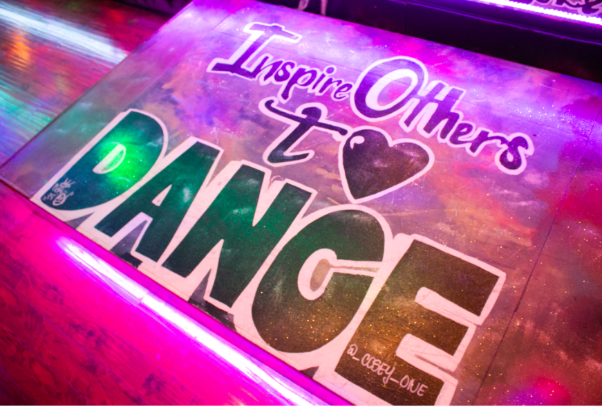

Our Story
San Antonio’s trusted studio for Quinceañera and special-event choreography
At SMASH Dance Studio in San Antonio, Texas, we specialize in creating beautiful and memorable choreographies for quinceañeras, sweet 16s, weddings, and special events. Our team of experienced instructors knows how to turn your ideas into a stunning performance that reflects your personality and makes your celebration unforgettable.
Whether you dream of a traditional Waltz, a fun Hip Hop routine, or a mix of Salsa, Merengue, Bachata, or Two Step, our choreographers bring creativity and passion to every dance. We take pride in blending cultural traditions with modern styles, helping you honor your heritage while adding a fresh, personal touch to your event.
We begin with an initial consultation to discuss your vision, music choices, and timeline. From there, we design a choreography that matches your theme, style, and skill level. We recommend scheduling your first session 6 to 8 weeks before your event to give you plenty of time to practice and perfect your routine.
At SMASH Dance, we’re more than just instructors — we’re storytellers through movement. Whether it’s your first dance or a group performance, we’re here to help you create a moment that you, your family, and your guests will never forget.
Schedule a consultationFAQ – Choreography Services
What types of choreography services do you offer?
We create customized dance routines for quinceañeras, sweet 16s, weddings, father-daughter dances, and other special events. Our instructors design choreography that matches your music, theme, and skill level, ensuring every performance feels personal and unforgettable.
Do you only teach traditional dances, or can we mix styles?
We love mixing styles. From Waltz, Salsa, Merengue, Bachata, and Two Step to Hip Hop and modern routines, we can blend traditions with new trends to create a performance that’s uniquely yours.
How far in advance should we start choreography lessons?
We recommend starting 6 to 8 weeks before the event. This gives you plenty of time to learn, rehearse, and feel confident on stage. The earlier you begin, the more flexibility we have to fine-tune details and create your perfect routine.
What happens during the first consultation?
Your consultation is a relaxed meeting where we talk about your vision, music, theme, and style preferences. We’ll review ideas, discuss timelines, and help you choose the best package for your needs. It’s all about bringing your ideas to life while keeping the process fun and stress-free.
What do we need to bring to the first lesson?
Bring comfortable shoes, your music selection if you already have it, and an open mind. Our instructors will guide you step-by-step and make sure you feel at ease from the very first class.
Where are you located?
SMASH Dance Studio is based in San Antonio, Texas, proudly serving families across the area with professional choreography and dance instruction for every occasion.
How can we book a consultation?
You can schedule your consultation online or call the studio to set up a time that works best for you. During your consultation, we’ll go over scheduling, song choices, and any special requests you may have. We also offer Zoom consultations.
